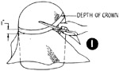
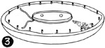
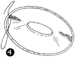
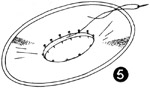

1952—How to Make Hats
by Ruby Carnahan
Blocking a Leghorn Straw Body
BLOCKING CROWN
Pin crown on Utility headblock, steam and press until crown fits block. Measure desired depth of crown from back to front and from side to side and draw a line on straw around block. (Illus .1) Cut off excess straw 1" below the line. Mark back and front of crown.
BLOCKING BRIM
Slip leghorn brim on brim block, with correct headband block size, and allow straw to turn up 1" around headsize.
 (Illus. 2) Pin brim
down to block around headsize, and lay a damp cloth over straw and press thoroughly
around headsize.
(Illus. 2) Pin brim
down to block around headsize, and lay a damp cloth over straw and press thoroughly
around headsize.
(Illus. 3) Pin brim down to block around edge of brim. Measure and mark exact size brim is to be and draw a line around brim on straw. Cut off excess straw on this line. Mark back and front of brim.
FINISHING BRIM WITH A BIAS FOLD
Measure a wire to fit edge of brim and join wire with a wire joiner, and sew wire around edge of straw brim, using an overcast stitch. Cut a 3" bias piece of velvet or silk. Stretch and pin one edge of the bias piece around the edge of brim and join ends on the bias. Remove bias piece and stitch joining on machine and steam press seam open. Return bias piece to brim, and pin around edge, with bias joining seam in back of brim. Sew bias piece to brim using a back stitch.
(Illus. 4) Turn bias piece over edge of brim, and turn raw edge of fold under. Pin fold around under side of brim and sew, using a ilip stitch.
SEWING CROWN AND BRIM TOGETHER
(Illus. 5) Match markings on brim and crown and pin together, and sew crown to brim around headsize. Finish headsize with a swirled headband ribbon.
Instructions for swirled headband page 45.